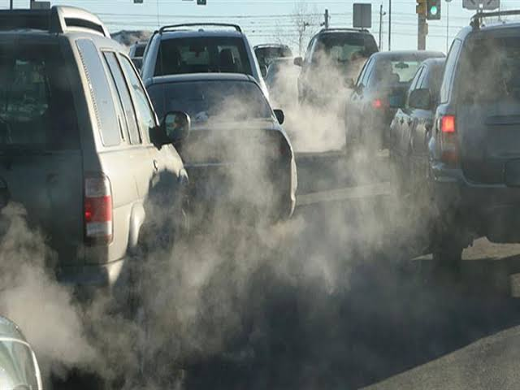
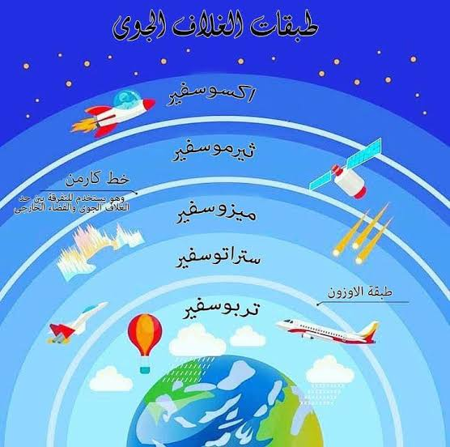

التلوث :
التلوث هو إدخال الملوثات إلى البيئة الطبيعية مما يسبب عدم استقرارها وضررًا للنظام البيئي. يمكن أن يكون التلوث في شكل مواد كيميائية أو طاقة مثل الضوضاء أو الحرارة أو الضوء

عوادم السيرات :
تعتبر عوادم السيارات من أكبر التحديات البيئية في عصرنا الحالي، حيث تُطلق غازات سامة مثل ثاني أكسيد الكربون وأكاسيد النيتروجين والجسيمات الدقيقة، مما يساهم في تلوث الهواء وزيادة الاحتباس الحراري. تؤثر هذه الانبعاثات سلبًا على صحة الإنسان، مسببة أمراضًا تنفسية وقلبية، كما تضر .....

الغلاف الجوي :
تضرر الغلاف الجوي ينتج عن تلوث الهواء بانبعاث الغازات الضارة مثل ثاني أكسيد الكربون والميثان، مما يؤدي إلى تفاقم ظاهرة الاحتباس الحراري وتغير المناخ. كما يتسبب في تآكل طبقة الأوزون، مما يعرض الأرض للأشعة فوق البنفسجية الضارة. هذه التغيرات تهدد صحة الإنسان والتنوع البيولوجي وتؤثر سلبًا على النظم البيئية العالمية.

دور مصر :
تلعب مصر دورًا فعالًا في محاربة التلوث من خلال تبني مشروعات صديقة للبيئة، مثل الطاقة الشمسية وطاقة الرياح، وتحسين إدارة النفايات. كما تشارك في الاتفاقيات الدولية لمكافحة تغير المناخ، وتهدف إلى زيادة الوعي البيئي لضمان مستقبل مستدام.
كيف الحد منه
أضغط هنا
أضغط هنا
Github
الصوت